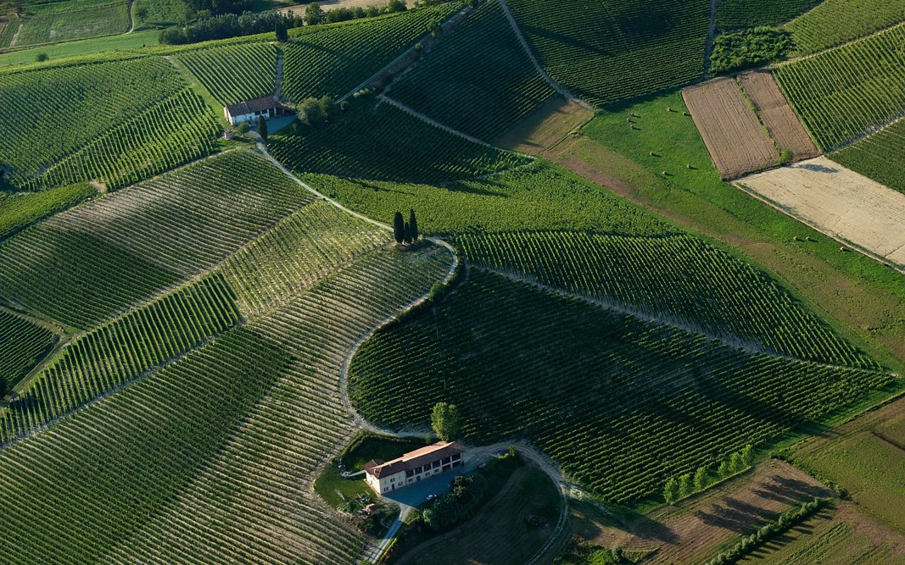

UNESCO - INTRODUZIONE AL TEMA
UNESCO
L'UNESCO è un’organizzazione che lavora in tutto il mondo ed ha due scopi principali: favorire il dialogo tra i cittadini della Terra e prendersi cura del patrimonio culturale e naturale dell’Umanità.
L’acronimo inglese UNESCO significa: UNITED NATIONS EDUCATIONAL SCIENTIFIC CULTURAL ORGANIZATION, tradotto in italiano ORGANIZZAZIONE delle NAZIONI UNITE per l’EDUCAZIONE, la SCIENZA e la CULTURA.
EDUCAZIONE
Perché solo attraverso un’istruzione di base per tutti si può attuare uno sviluppo economico e sociale.
SCIENZA
Perché la scienza è la chiave per consentire la salvaguardare del patrimonio naturale e promuovere un utilizzo sostenibile delle risorse.
CULTURA
Perché la diversità culturale va difesa e di conseguenza vanno tutelati i monumenti in quanto rappresentazioni concrete e significative della cultura che li ha creati;
COME NASCE?
L’UNESCO, viene fondata a Parigi nel novembre del 1945 nell'ambito della Conferenza dei Ministri Alleati dell'Educazione è l’organizzazione delle Nazioni Unite che si occupa di cultura, istruzione, scienze e arti. Fu fondata proprio dopo la fine della Seconda guerra mondiale, i delegati infatti decisero di creare un’organizzazione che incarnasse un’autentica cultura di pace e, promuovendo la solidarietà tra gli uomini, scongiurasse lo scoppio di un nuovo conflitto mondiale.
Oggi l’UNESCO con sede a Parigi, conta 165 Stati membri e 10 Stati associati. I progetti sponsorizzati dall'UNESCO comprendono programmi scientifici internazionali; programmi di alfabetizzazione, tecnici e di formazione degli insegnanti; progetti regionali e di storia culturale; e cooperazioni internazionali per conservare il patrimonio culturale e naturale del pianeta e per preservare i diritti umani.
L’UNESCO ha sostanzialmente due scopi:
Favorire il dialogo e lo sviluppo delle culture e preservare il patrimonio culturale e naturale dell’Umanità. Il primo ha grande rilevanza nell’azione dell’organizzazione, in quanto è posta a fondamento dell’organizzazione stessa la convinzione che solo un costante dialogo interculturale e lo sviluppo della cultura, delle arti, delle scienze e dei sistemi educativi possano favorire la cooperazione tra le Nazioni, la comprensione fra i popoli e il progresso economico, la giustizia sociale e la pace nel mondo.
Il secondo obiettivo è perseguito dall’UNESCO mediante l’identificazione, la protezione, la tutela e la trasmissione alle generazioni future dei beni culturali e naturali del mondo. sulla base di un trattato internazionale conosciuto come Convenzione sulla Protezione del Patrimonio Mondiale Culturale e Naturale adottato nel 1972.
Secondo la Convenzione, per patrimonio culturale si intende
un monumento, un gruppo di edifici o un sito di valore storico, estetico, archeologico, scientifico, etnologico o antropologico. Il patrimonio naturale, invece, è costituito da rilevanti caratteristiche fisiche, biologiche e geologiche, dall’habitat di specie animali e vegetali in pericolo e aree di particolare valore scientifico ed estetico.
Inoltre, per i patrimoni culturali e naturali:
La Convenzione “obbliga” gli Stati che ospitano i siti a preservarli dal degrado e dalle manomissioni, a conservarli, a curarne il restauro e ad assicurarne il valore funzionale.
IL PATRIMONIO MONDIALE
Il Patrimonio mondiale riconosciuto dall’UNESCO è affidato al centro del patrimonio mondiale. In base a un trattato internazionale (la Convenzione sulla Protezione del Patrimonio Mondiale Culturale e Naturale, del 1972), l’UNESCO ha fino ad oggi riconosciuto 1.154 beni Patrimonio dell’Umanità (897 beni culturali, 218 beni naturali e 39 misti) in 167 Stati. Con 58 siti, 53 culturali e 5 naturali, l’Italia è lo stato con più siti iscritti nella lista dei beni patrimonio mondiale dell’UNESCO. (09/2021).
Un bene del Patrimonio mondiale è un prodotto dell’uomo o della natura che possiede un eccezionale valore universale (Outstanding Universal Value) per l’intera umanità, indipendentemente dall’appartenenza politica del luogo in cui si trova. Può essere un habitat naturale o un’opera d’arte, un monumento o un paesaggio culturale che esibisce una determinata interazione tra l’uomo e l’ambiente.
Il Valore Universale Eccezionale (OUV ovvero Outstanding Universal Value) è il fondamento del Patrimonio Mondiale ed è la base per la tutela e la gestione di un Sito. I siti del Patrimonio Mondiale appartengono a tutte le popolazioni del mondo, al di là dei territori nei quali essi sono collocati. Si tratta di tutti quei siti il cui valore universale, culturale e/o naturale, è appunto così eccezionale da trascendere i confini nazionali e da essere considerato di importanza comune per le generazioni presenti e future di tutta l’umanità. In quanto tale, la tutela permanente di questo patrimonio è della massima importanza per l’intera comunità internazionale. Interpretare l’OUV e trasmetterlo è spesso difficile, ma rimane al centro dell’attuazione della Convenzione sulla Protezione del Patrimonio Mondiale. Il patrimonio rappresenta l’eredità del passato di cui noi oggi beneficiamo e che abbiamo il dovere di trasmettere alle generazioni future.
TIPOLOGIE DI SITI PATRIMONIO MONDIALE
NATURALI
Monumenti naturali costituiti da formazioni fisiche e biologiche o da gruppi di tali formazioni di valore universale eccezionale dall’aspetto estetico o scientifico;
-
Formazioni geologiche efisiografichee le zone strettamente delimitate costituenti l’habitat di specie animali e vegetali minacciate, di valore universale eccezionale dall’aspetto scientifico o conservativo,
-
Siti naturali o le zone naturali strettamente delimitate di valore universale eccezionale dall’aspetto scientifico, conservativo o estetico naturale
Esempio: IL MONTE ETNA
È rinomato per il suo eccezionale livello di attività vulcanica e per la documentazione della sua attività per almeno 2.700 anni. La sua notorietà, l’importanza scientifica e il valore culturale ed educativo sono di importanza globale.
CULTURALI
Monumenti: opere architettoniche, plastiche o pittoriche monumentali, elementi o strutture di carattere archeologico, iscrizioni, grotte e gruppi di elementi di valore universale eccezionale dall’aspetto storico, artistico o scientifico,
Agglomerati: gruppi di costruzioni isolate o riunite che, per la loro architettura, unità o integrazione nel paesaggio hanno valore universale eccezionale dall’aspetto storico, artistico o scientifico,
Siti: opere dell’uomo o opere coniugate dell’uomo e della natura, come anche le zone, compresi i siti archeologici, di valore universale eccezionale dall’aspetto storico ed estetico, etnologico o antropologico.
Esempio: Orto Botanico di Padova

È il primo orto universitario al mondo ed è all’origine di tutti gli orti botanici; rappresenta la culla della scienza, degli scambi scientifici e della comprensione delle relazioni tra la natura e la cultura. Ha dato un significativo contributo allo sviluppo di molte discipline scientifiche moderne, tra cui la botanica, la medicina, la chimica, l’ecologia e la farmacia.
PAESAGGI CULTURALI
Paesaggi che rappresentano “creazioni congiunte dell'uomo e della natura”, così come definiti all’articolo 1 della Convenzione, e che illustrano l’evoluzione di una società e del suo insediamento nel tempo sotto l’influenza di costrizioni e/o opportunità presentate, all’interno e all’esterno, dall’ambiente naturale e da spinte culturali, economiche e sociali. La loro protezione può contribuire alle tecniche moderne di uso sostenibile del territorio e al mantenimento della diversità biologica
MISTI
Beni che corrispondono in parte o in tutto a entrambe le definizioni di patrimonio culturale e naturale.
SERIALI
Un insieme di Beni omogenei localizzati entro uno o più stati nazione.
Esempio: I Paesaggi vitivinicoli del Piemonte: Langhe-Roero e Monferrato
Offrono panorami di colline coltivate con attenzione, seguendo le antiche divisioni del territorio, punteggiato da edifici che danno struttura allo spazio visivo: borghi, castelli, chiese romaniche, fattorie, ciabòt , cantine e magazzini per l’invecchiamento e per la distribuzione commerciale del vino nelle piccole e grandi città ai margini dei vigneti.
TRANSNAZIONALI
Siti dislocati su aree che si snodano nei territori di due o più stati.
Esempio: I siti palafitticoli preistorici dell’arco alpino
La serie di 111 dei 937 siti archeologici palafitticoli conosciuti, in sei paesi delle regioni alpine e sub-alpine d’Europa, è composto dai resti di insediamenti preistorici databili tra il 5000 e il 500 a.C. che si trovano sotto l’acqua, sulle rive del lago, lungo i fiumi o in aree umide. Grazie alle eccezionali condizioni di conservazione dei materiali organici forniti dai siti saturi d’acqua e le ricerche archeologiche abbiamo una dettagliata percezione del mondo delle prime società agricole in Europa.
ITER DI CANDIDATURA
Un paese diventa Stato Parte firmando la Convenzione per il Patrimonio Mondiale e impegnandosi a proteggere il proprio patrimonio culturale e naturale.
Uno Stato Parte seleziona ogni anno due siti (1 sito culturale e 1 naturale ) da proporre per l’iscrizione nella Lista del Patrimonio Mondiale.
Gli Stati redigono i dossier di candidatura e li inviano al Centro del Patrimonio Mondiale
Gli organi tecnici ICOMOS (Consiglio Internazionale dei Monumenti e dei Siti) e IUCN (Unione Internazionale per la Conservazione della Natura) valutano i dossier
Gli esperti visitano i siti per valutarne il grado di protezione e la gestione.
Il Comitato Mondiale UNESCO, che si riunisce ogni anno in uno stato diverso, esprime il proprio giudizio finale di iscrizione (o meno) alla Lista.